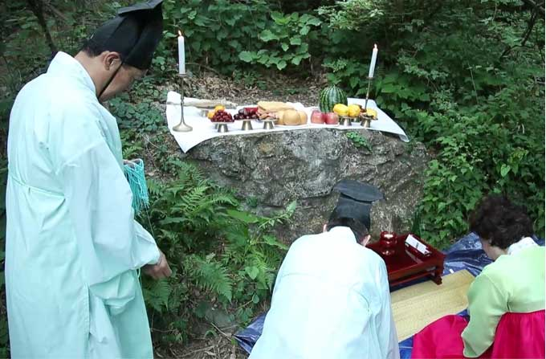
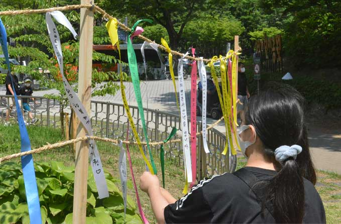
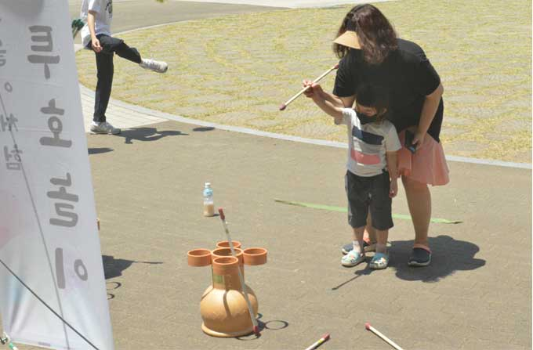
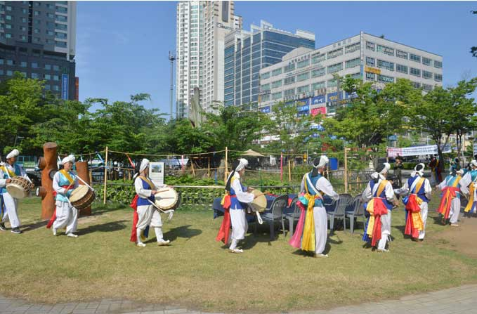

영통청명단오제
2005년에 시작한 영통청명단오제는
2022년에 16회를 맞이하게 되었습니다.
우리나라 단오는 우리 민족 전통 4대 명절의 하나로 일 년 중 가장 양기가 왕성한 날이라 해서 큰 명절로 여겨왔으며, 모내기를 끝내고 풍년을 기원하는 기풍제(祈豊際)이기도 합니다.


영통에서는 오래전부터 청명산 산신제와 느티나무 앞에서 당산제를 지내며 마을사람들의 연중무병과 평온무사를 비는 제를 지내 내려오고 있습니다.
가족들이 함께 즐길 수 있는 투호놀이, 그네뛰기 등의 민속경기, 단오부채 가훈쓰기 등 다양한 단오축제가 열립니다.


축제 외에도 전시한마당, 공연한마당, 먹거리 등 다양한 행사로 구성되어 개최됩니다.